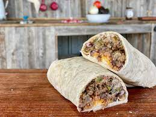

Burrito

Description
- whole meal is pushing 50+ grams of protien.
- Can never say no to a burrito
Ingredients
- pinto beans
- flour tortillas
- ground turkey
ground turkey seasoning
- onion powder
- garlic powder
- greek seasoning
Steps
- pour one tbsp of olive oil
- weigh out four ounces of ground turkey
- place turkey in pan and put stove on high
- throw on the all the seasoning and make sure to put plenty
- Put the stove on med-high and start working on the other tasks
- add pinto beans, garlic salt, and parmesan cheese to three flour tortillas
- Time it correctly so that when the ground turkey is cooked you can instantly add it to the hot tortillas